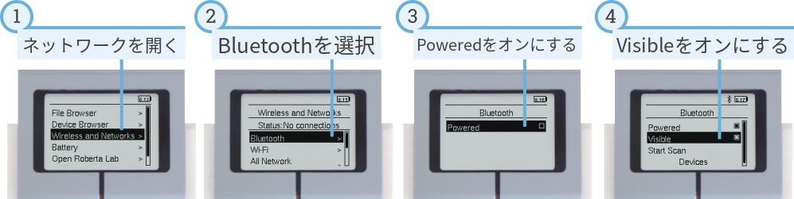
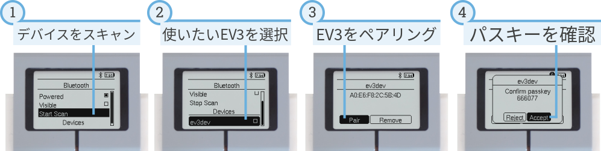
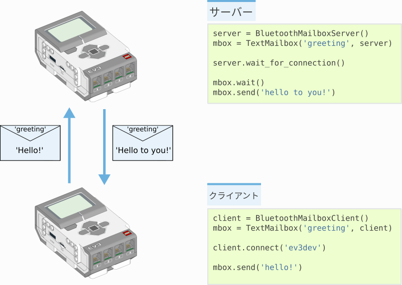

messaging – メッセージング¶
EV3ブロックはBluetoothを使って別のEV3ブロックに情報を送信できます。 このページでは、複数のブロックを接続する方法と、それらの間でメッセージを 送受信するスクリプトの書き方を紹介します。
2台のEV3ブロックをペアリングする¶
2台のEV3ブロックがメッセージをやり取りするには、事前に ペアリング が必要です。 これは最初の1回だけ行えばよいものです。まず、図19に示すように すべてのEV3ブロックでBluetoothを有効にします。

図19 Bluetoothをオンにし、Bluetoothを検出可能な状態にします。
次に、図20に示すように、片方のEV3ブロックからもう片方を 検索してペアリングします。
ペアリングが完了したら、表示されるメニューで connect はクリックしないでください。 接続は、後述するようにプログラムを実行したときに確立されます。

図20 あるEV3ブロックを別のEV3ブロックにペアリングします。
Bluetoothデバイスをスキャンすると、デバイス名の一覧が表示されます。 既定では、すべてのEV3ブロックは ev3dev という名前になっています。 名前の変更方法はこちらを参照してください。 名前を変えておくと、複数のブロックを区別しやすくなります。
3台以上のEV3ブロックをペアリングしたい場合は、図20の 手順を繰り返します。
サーバーとクライアント¶
無線ネットワークは、サーバーまたはクライアントとして動作するEV3ブロックで構成されます。 サーバー1台とクライアント1台の例を図21に示します。 メッセージは双方向に送信できます。サーバーからクライアントへも、 クライアントからサーバーへも送信できます。

図21 サーバー1台とクライアント1台からなるネットワークの例。
サーバーの完全な例を表示/非表示
例: EV3 Bluetoothサーバー。
図21に示した抜粋の完全版です。
#!/usr/bin/env pybricks-micropython
# このプログラムを実行する前に、クライアントとサーバーのEV3ブロックが
# Bluetoothでペアリング済みであることを確認してください。ただし接続はしないこと。
# 接続の確立はプログラムが行います。
# サーバーはクライアントより先に起動する必要があります！
from pybricks.messaging import BluetoothMailboxServer, TextMailbox
server = BluetoothMailboxServer()
mbox = TextMailbox('greeting', server)
# サーバーはクライアントより先に起動する必要があります！
print('waiting for connection...')
server.wait_for_connection()
print('connected!')
# このプログラムでは、サーバーはクライアントからの最初のメッセージを待ち、
# その後に返信を送信します。
mbox.wait()
print(mbox.read())
mbox.send('hello to you!')
クライアントの完全な例を表示/非表示
例: EV3 Bluetoothクライアント。
図21に示した抜粋の完全版です。
#!/usr/bin/env pybricks-micropython
# このプログラムを実行する前に、クライアントとサーバーのEV3ブロックが
# Bluetoothでペアリング済みであることを確認してください。ただし接続はしないこと。
# 接続の確立はプログラムが行います。
# サーバーはクライアントより先に起動する必要があります！
from pybricks.messaging import BluetoothMailboxClient, TextMailbox
# これは接続先のリモートEV3またはPCの名前です。
SERVER = 'ev3dev'
client = BluetoothMailboxClient()
mbox = TextMailbox('greeting', client)
print('establishing connection...')
client.connect(SERVER)
print('connected!')
# このプログラムでは、クライアントが最初のメッセージを送信し、その後
# サーバーからの返信を待ちます。
mbox.send('hello!')
mbox.wait()
print(mbox.read())
クライアントとサーバーの唯一の違いは、プログラムの冒頭でどちらが 接続を開始するかです。
- サーバーは常に先に起動する必要があります。
BluetoothMailboxServerクラスを使用し、wait_for_connectionメソッドでクライアントを待ちます。- クライアントは
BluetoothMailboxClientクラスを使用し、connectメソッドでサーバーに接続します。- その後のメッセージの送受信は、どちらのEV3ブロックでも同じ方法で行います。
-
class
BluetoothMailboxServer¶ 1台以上のリモートEV3からのBluetooth接続を表すオブジェクトです。
リモートのEV3は、MicroPythonでも標準のEV3ファームウェアでも動作しているものが使えます。
「サーバー」は「クライアント」からの接続を待ちます。
-
wait_for_connection(count=1)¶ リモートデバイス上の
BluetoothMailboxClientが 接続するのを待ちます。引数: count (int) – 待機するリモート接続の数。 例外: OSError– 接続の確立に問題がありました。
-
close()¶ すべての接続を閉じます。
-
-
class
BluetoothMailboxClient¶ 1台以上のリモートEV3へのBluetooth接続を表すオブジェクトです。
リモートのEV3は、MicroPythonでも標準のEV3ファームウェアでも動作しているものが使えます。
「クライアント」は待機中の「サーバー」への接続を開始します。
-
connect(brick)¶ 別のデバイス上の
BluetoothMailboxServerに接続します。リモートデバイスはペアリング済みで、接続を待機している必要があります。
BluetoothMailboxServer.wait_for_connection()を参照してください。引数: brick (str) – 接続先のリモートEV3の名前またはBluetoothアドレス。 例外: OSError– 接続の確立に問題がありました。
-
close()¶ すべての接続を閉じます。
-
メールボックス¶
メールボックスは、他のEV3ブロックとの間でデータを送受信するために使います。
メールボックスには、メールの「件名」のような name があります。
2台のEV3ブロックが同じ名前のメールボックスを持っていれば、それらの間で
メッセージを送れます。各EV3ブロックは自分のメールボックスを読み取り、
相手のEV3ブロック上のメールボックスへメッセージを送信できます。
やり取りしたいメッセージの種類（バイト列、真偽値、数値、テキスト）に応じて、 以下のメールボックスから選択してください。
-
class
Mailbox(name, connection, encode=None, decode=None)¶ データを保持するメールボックスを表すオブジェクトです。
他のEV3ブロックから配信されたデータを読み取ったり、同じメールボックスを 持つ他のブロックへデータを送信したりできます。
既定では、メールボックスはバイト列だけを読み書きします。他のデータを 送るには、Pythonオブジェクトをバイト列に変換する
encode関数と、 バイト列をPythonオブジェクトに戻すdecode関数を指定します。引数: - name (str) – このメールボックスの名前。
- connection –
BluetoothMailboxClientなどの接続オブジェクト。 - encode (callable) – Pythonオブジェクトをバイト列にエンコードする関数。
- decode (callable) – バイト列から新しいPythonオブジェクトを作成する関数。
-
read()¶ メールボックスの現在の値を取得します。
戻り値: 現在の値。メールボックスが空の場合は None。
-
send(value, brick=None)¶ 接続されたデバイス上のこのメールボックスに値を送信します。
引数: - value – メールボックスに配信される値。
- brick (str) – ブロックの名前またはBluetoothアドレス。
Noneの場合は 接続中のすべてのデバイスにブロードキャストします。
例外: OSError– 接続に問題があります。
-
wait()¶ リモートデバイスによってメールボックスが更新されるまで待機します。
-
wait_new()¶ メールボックス内の現在の値と異なる、新しい値がメールボックスに 配信されるまで待機します。
戻り値: 新しい値。
-
class
LogicMailbox(name, connection)¶ 真偽値データを保持するメールボックスを表すオブジェクトです。
通常の
Mailboxと同じように動作しますが、 値はTrueまたはFalseのみです。EV3-Gの「ロジック」メールボックスタイプと互換性があります。
引数: - name (str) – このメールボックスの名前。
- connection –
BluetoothMailboxClientなどの接続オブジェクト。
-
class
NumericMailbox(name, connection)¶ 数値データを保持するメールボックスを表すオブジェクトです。
通常の
Mailboxと同じように動作しますが、 値は15や12.345のような数値である必要があります。EV3-Gの「数値」メールボックスタイプと互換性があります。
引数: - name (str) – このメールボックスの名前。
- connection –
BluetoothMailboxClientなどの接続オブジェクト。
-
class
TextMailbox(name, connection)¶ テキストデータを保持するメールボックスを表すオブジェクトです。
通常の
Mailboxと同じように動作しますが、 データは'hello!'や'My name is EV3'のような文字列である必要があります。EV3-Gの「テキスト」メールボックスタイプと互換性があります。
引数: - name (str) – このメールボックスの名前。
- connection –
BluetoothMailboxClientなどの接続オブジェクト。